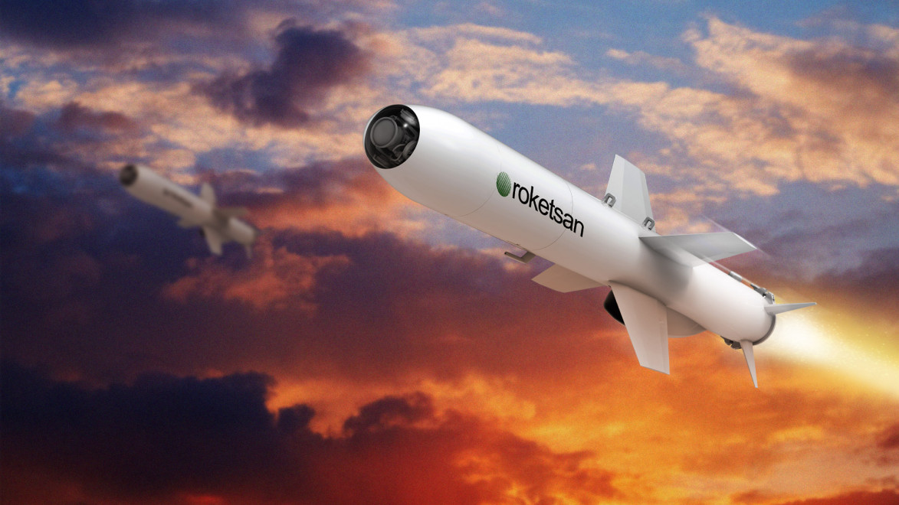
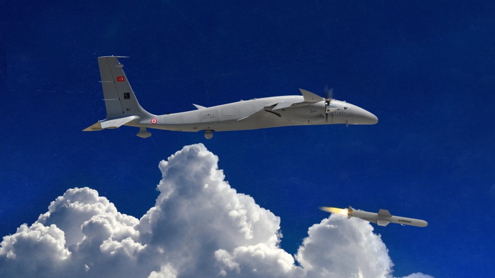
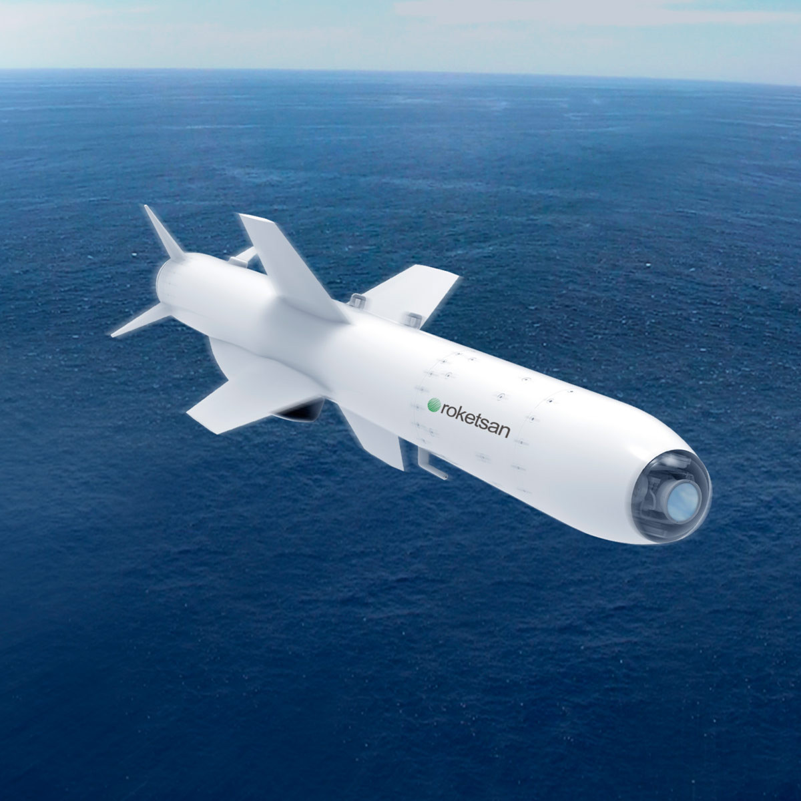

Yeni Nesil Çok Platformlu Seyir Füzesi
ÇAKIR, kara, deniz ve hava platformlarına entegre edilebilen yeni nesil seyir füzesidir. Düşük görünürlük, yüksek hassasiyet ve çoklu platform uyumu sayesinde farklı görev konseptlerinde kullanılabilecek şekilde geliştirilmiştir.
Füze ailesi; gelişmiş navigasyon uygulamaları, çoklu arayıcı seçenekleri ve veri bağı altyapısı ile sabit veya fırsat hedeflerine karşı etkili angajman sağlar. Görev sırasında hedef güncelleme, yeniden saldırı ve görev iptali gibi modern kabiliyetlere sahiptir.
ÇAKIR; su üstü platformları, SİDA’lar, taktik tekerlekli kara araçları, döner kanatlı hava platformları, SİHA’lar, muharip uçaklar ve sabit kanatlı hava platformlarında kullanılabilecek şekilde iki ana fırlatma yaklaşımına sahiptir: satıhtan atılan ve havadan atılan konfigürasyonlar.
100+ km
150+ km
3.8 m
3.3 m
275 mm
70 kg
| Füze Tipi | Çok platformlu seyir füzesi |
| Adı | ÇAKIR |
| Görev Alanı | Kara ve deniz hedeflerine karşı hassas taarruz |
| Satıhtan Atılan Menzil | 100+ km |
| Havadan Atılan Menzil | 150+ km |
| Satıhtan Atılan Uzunluk | 3.8 m |
| Havadan Atılan Uzunluk | 3.3 m |
| Satıhtan Atılan Ağırlık | 350 kg |
| Havadan Atılan Ağırlık | 275 kg |
| Çap | 275 mm |
| Güdüm | Hibrit / radar / kızılötesi görüntüleyicili arayıcı başlık seçenekleri |
| Seyrüsefer | Ataletsel navigasyon sistemi, karıştırmaya dayanıklı GNSS, yeryüzü referanslı navigasyon |
| Altimetre | Barometrik altimetre ve radar altimetre |
| Harp Başlığı Ağırlığı | 70 kg |
| Harp Başlığı Tipleri | Yüksek patlayıcılı yarı delici, parçacık etkili, termobarik |
| Düşük Görünürlük | Düşük radar kesit alanı / düşük görünürlük yaklaşımı |
| Hedef Hassasiyeti | Yüksek hedef vuruş hassasiyeti |
| Hava Koşulları | Her türlü hava şartında görev yapabilme |
| Karşı Tedbir Dayanımı | Karşı tedbirlere dayanıklı yapı |
| Öne Çıkan Özellik | Kara, deniz ve hava platformlarından atılabilen, veri bağı destekli, yeni nesil yerli seyir füzesi |
| Veri Bağı | Hedef güncelleme, görev iptali ve yeniden saldırı desteği |
| Yeniden Saldırı | Re-attack / yeniden saldırı modu |
| Görev İptali | Mission abort kabiliyeti |
| Görev Planlama | 3 boyutlu görev planlama |
| Zamanlama | ToT, DToT, SToT |
| Salvo Atış | Salvo / ripple fire desteği |
| Fırsat Hedefi | Görev sırasında hedef güncelleme ile fırsat hedeflerine angajman desteği |
| Satıhtan Atılan Platformlar | SİDA, su üstü platformları, taktik tekerlekli kara platformları, döner kanatlı hava platformları |
| Havadan Atılan Platformlar | SİHA, muharip uçak, sabit kanatlı hava platformları |
| Kullanım Yaklaşımı | Farklı platformlarda çoklu taşıma özelliği ile entegrasyon |


